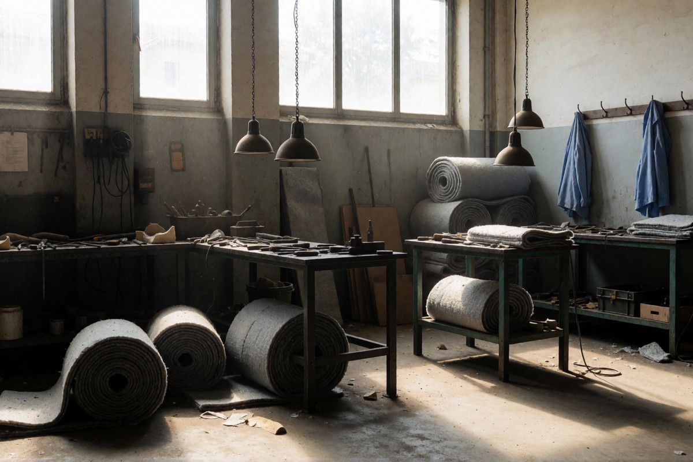

Cronaca · 25 novembre 2026
Bossetti al lavoro fuori dal carcere, e la mail che lo annuncia

L'ergastolano per l'omicidio di Yara Gambirasio è ammesso al lavoro esterno dal carcere di Bollate. Un'azienda di Cormano ne ha annunciato l'arrivo ai dipendenti con nome e cognome. L'iniziativa, dice il suo legale, è partita dal carcere.
di Franco Zanghì
Un'azienda di Cormano, alle porte di Milano, ha annunciato ai propri dipendenti con una mail interna che Massimo Bossetti avrebbe lavorato con loro. Con nome e cognome. Lo ha scritto l'ANSA mercoledì 25 novembre 2026, riprendendo il Corriere della Sera, la Stampa e il Quotidiano Nazionale.
Massimo Bossetti ha 56 anni, è l'ex muratore di Mapello, ed è detenuto dal 16 giugno 2014. Dal 2018 la condanna è definitiva: per tre Corti d'Assise è lui l'uomo che lasciò il proprio Dna sugli indumenti di Yara Gambirasio. La ragazzina aveva 13 anni e scomparve il 26 novembre 2010 a Brembate di Sopra, all'uscita dal centro sportivo; il corpo fu trovato il 26 febbraio 2011. Giovedì sono sedici anni.
Come funziona
Bossetti è stato ammesso al lavoro all'esterno, la misura prevista dall'articolo 21 dell'ordinamento penitenziario. Esce la mattina dal carcere di Bollate, dove è detenuto dal 2019, guida per undici chilometri fino alla Coimec di Cormano, un'azienda di coibentazioni termoacustiche, lavora fino a poco dopo mezzogiorno e rientra in cella. Secondo BergamoNews l'uscita è alle 8 e il rientro entro le 12:30. La Coimec ha dal 2024 un'officina dentro Bollate, dove Bossetti già lavorava.
Una cosa va detta subito: non l'ha chiesto lui. L'iniziativa, scrive l'ANSA, è partita dalla direzione del carcere, con l'approvazione del magistrato di sorveglianza. Lo conferma il suo difensore Claudio Salvagni: «È venuto tutto dal carcere», e «lui non voleva nemmeno, ha sempre detto che sarebbe voluto uscire da innocente». La legge consente il lavoro esterno anche a chi scontа l'ergastolo, dopo almeno dieci anni di pena; Bossetti ne ha scontati poco più di dodici. A Bollate i detenuti ammessi al lavoro esterno sono circa 250.
Lui, e la revisione
Bossetti continua a dirsi innocente. Intervistato da Gianluigi Nuzzi a Quarto Grado, su Rete 4, venerdì 20 novembre, ha detto del carcere: «Un incubo per me. È una sopportazione sovrumana, grazie a Dio che c'è il lavoro che mi distrae, ma quando rientro mi abbatto». Sulla revisione: «Sì, assolutamente sì. Ci sono tante cose che possono essere fatte meglio».
Il 5 ottobre 2026 la Corte d'Assise di Bergamo ha respinto la richiesta della difesa di nuovi accertamenti genetici sui reperti e di accesso alla documentazione di laboratorio. I difensori Claudio Salvagni e Paolo Camporini hanno impugnato in Cassazione e attendono la fissazione dell'udienza.
I genitori di Yara, Maura Panarese e Fulvio Gambirasio, restano fuori dalla scena pubblica: i loro legali Enrico Pelillo e Andrea Pezzotta hanno scelto di non commentare. In azienda, al Giorno, un operaio ha detto: «Lui è stato accolto normalmente, per noi è un collega come gli altri».
C'è chi lo difende
Il 24 novembre, nella rubrica «La stanza di Feltri» sul Giornale, Vittorio Feltri risponde a un lettore che invoca la pena di morte. Si dichiara contrario, scrive che la condanna di Bossetti è a suo avviso ingiusta — «io continuo a ritenerlo innocente» — e denuncia l'ipocrisia di chi loda la rieducazione e poi si scandalizza quando funziona: «Vogliamo recuperare le persone oppure vogliamo soltanto punirle per il gusto di punirle?».
Come la vedo io
Sulla colpevolezza hanno deciso tre gradi di giudizio, e finché una revisione non dirà altro quella sentenza vale. Ma il lavoro fuori dal carcere non è un regalo a Bossetti: lo prevede la Costituzione, che vuole pene che rieducano, e una legge che vale per tutti i detenuti con quei requisiti. Lavorare qualche ora e poi tornare in cella non è libertà.
Quello che stona è altro: una mail con nome e cognome mandata a tutti i dipendenti, e le telecamere ad aspettarlo all'uscita. La rieducazione ha bisogno di silenzio. E di silenzio ha bisogno soprattutto una famiglia che da sedici anni ha scelto di non parlare, e che giovedì ricorderà una figlia.
Fonti
- ANSA, «Ditta nel Milanese accoglie Bossetti con una mail: lavorerà con noi», 25 novembre 2026
- Open, «Massimo Bossetti, carcere e lavoro a Cormano», 25 novembre 2026
- Il Giorno, Federico Berni, «Massimo Bossetti», 22 novembre 2026
- BergamoNews, «Bossetti esce dal carcere per lavorare ogni mattina in un'azienda di Cormano», 21 novembre 2026
- Tgcom24, «Massimo Bossetti, l'intervista a Quarto Grado», 20 novembre 2026
- il Giornale, Vittorio Feltri, «Riabilitare Bossetti», 24 novembre 2026
Sulla data di inizio le fonti divergono: ANSA indica l'inquadramento ufficiale in azienda da lunedì 23 novembre, mentre Il Riformista e altre testate riferiscono che il permesso è attivo dal 17 novembre e BergamoNews descriveva le uscite già il 21. Parte della stampa definisce la misura «semilibertà»: si tratta invece del lavoro all'esterno previsto dall'articolo 21 dell'ordinamento penitenziario. Il testo integrale della mail non è stato pubblicato da nessuno e ne circolano due formulazioni. Il dato dei circa 250 detenuti ammessi al lavoro esterno a Bollate risulta soltanto dall'ANSA e dai suoi rilanci. Non risultano dichiarazioni dell'azienda, della direzione del carcere né prese di posizione politiche.